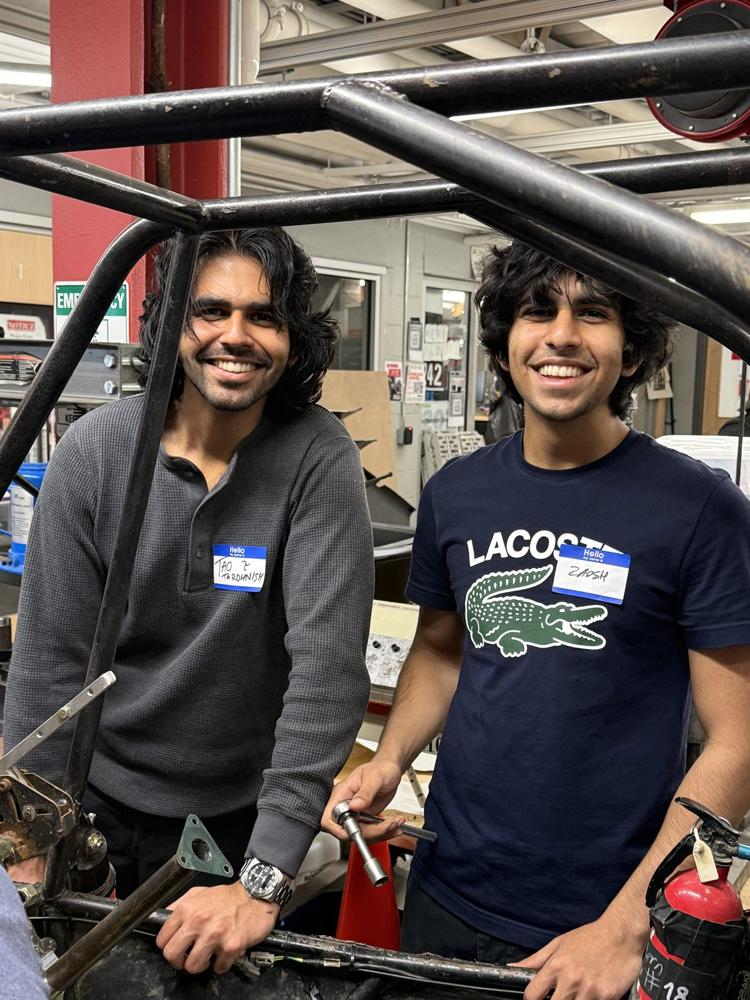
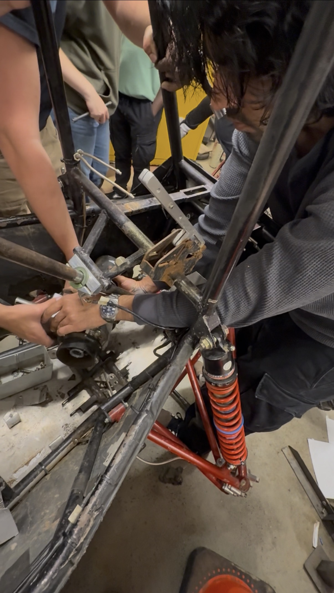
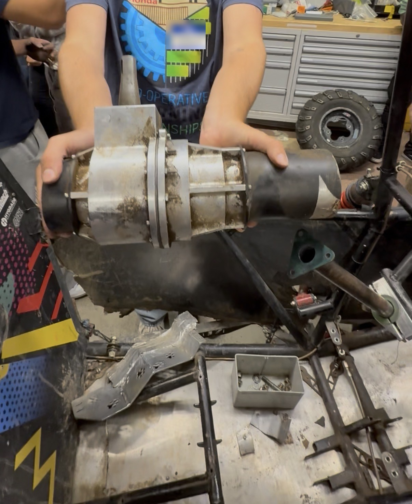
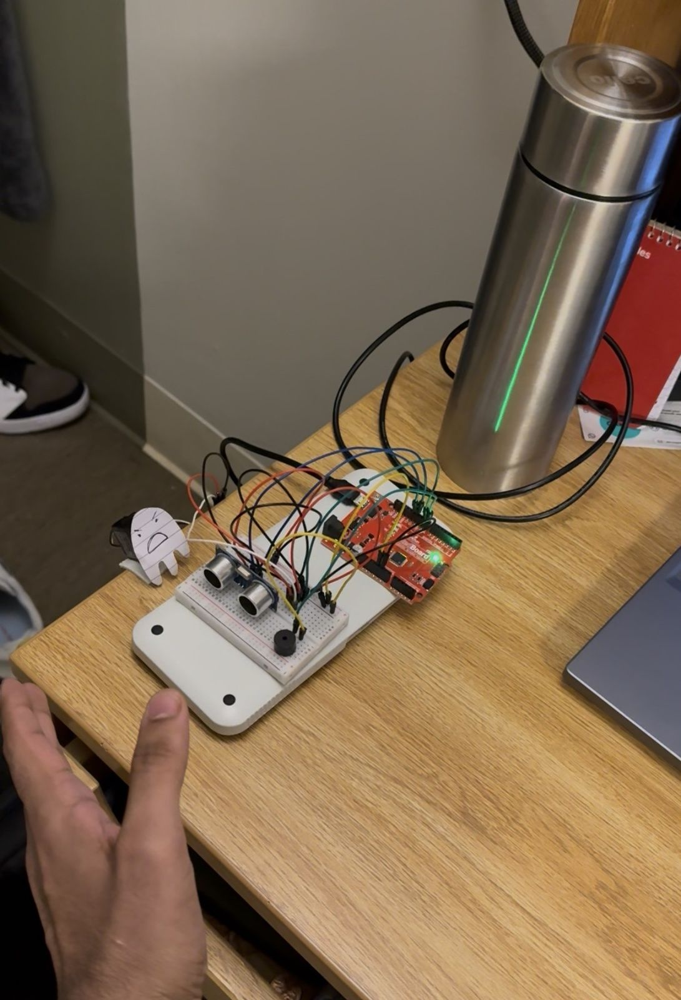
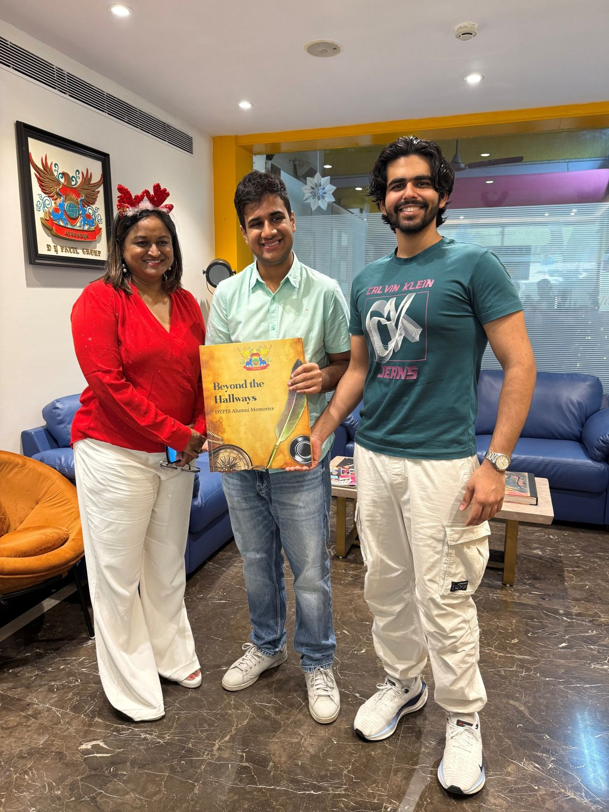

About

I'm a Mechanical Engineering student at Northeastern University, drawn to automation, design, and manufacturing, especially the processes that turn a creative concept into a physical product.
It started when I was a kid and repaired a broken RC car by reconnecting its servo wires. The satisfaction of bringing something back to life turned into a lasting habit of tinkering, building, and figuring out how things work.
I grew up in Mumbai, where I interned as a test engineer at a BMW workshop, built a voice-controlled chess robot at the Makers Asylum residency, and founded an e-waste recycling initiative. At Northeastern, Cornerstone Engineering 1 and 2 and the mentorship of Dr. Duncan Davis shaped how I approach engineering: creativity, teamwork, and technical precision together. Whether I'm machining parts, designing in CAD, troubleshooting circuits, or tearing down a race car with the Baja SAE team, I like pushing ideas from sketch to prototype while learning from the people around me.
I do my best work on fast-paced, multidisciplinary teams where everyone contributes something different. Long term, I want to build and lead teams developing manufacturing machinery and automotive technology, and eventually broader hardware.
Outside engineering, I'm learning Japanese, I love to travel, and I'm always up for adventure sports.
Teams and leadership
-
Northeastern Baja SAE
Disassembled the front gearbox, suspension (A-arms, shock absorbers, steering knuckles), brakes and brake pads, and wheels of the team's single-seat off-road race car, working out the removal sequence for each subsystem.
Next: aiming to work with the powertrain team on gear ratios and efficiency.
-

Removing the A-arms to reach the front gearbox. -

Removing the front gearbox from the team's off-road race car. -

The front gearbox, extracted from the car.
-
-
E-Waste Recycling Initiative
Deployed collection bins, coordinated municipal pickups, and ran flyer campaigns, collecting half a ton of e-waste.


Education
- Northeastern University
- BS in Mechanical Engineering, expected May 2028
- Indian Institute of Technology Bombay
- AI and Machine Learning Short Course, June 2026
Relevant coursework: Machine Design, Finite Element Analysis, Mechanics of Materials, Materials Science, Dynamics and Vibrations, Fluid Mechanics, Thermodynamics, Circuits, Probability and Statistics.
Skills
- Design and analysis
- SolidWorks, Fusion 360, AutoCAD (2D orthographic projection drawings), MATLAB, Excel, finite element analysis (coursework), hand stress and fatigue analysis, material selection, design for 3D printing
- Testing
- Instron tensile and torsion, Rockwell hardness, Charpy impact, SEM-EDS, optical microscopy, metallography
- Fabrication
- 3D printing, laser cutting, vacuum forming, woodworking, soldering, fixture and prototype building
- Electronics and controls
- Arduino (C++), Raspberry Pi, stepper and DC motors, solenoids, Hall sensors, transistor circuits
- Automotive
- ICOM/ISSS, ISTA, ISTA/P, AIR, ECU programming, multimeter, refractometer, vehicle teardown
- AI tools
- Claude (agentic workflows, MCP and API integration), N8N, Make.com, prompt engineering
Photos



